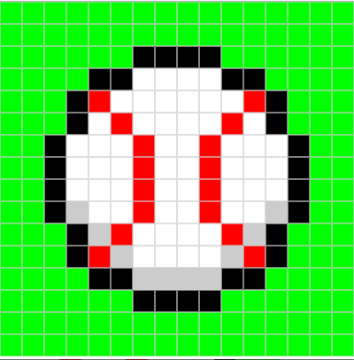

| Activities | Description |
|---|---|
| Heroes and Patriots | Heroes and Patriots is a special experience that anyone can participate in. Multiple times during the year hundreds of volunteers will come together and make a spectacular holiday for our veterans and their families. The biggest event of the year is during Christmas, because a lot of families will unite and come together, because one family member could be serving in another country. This experience has changed my life and opened my eyes for everything I took for granted. |
| Baseball | Baseball is a sport that has a special connection with me. I have been playing baseball since I was seven years old, and I still get the joyful experience every time I step onto the field. I play baseball for Damien High School and I currently play on the junior varisty team. My goal is to one day play college baseball and maybe even professional baseball. Although, this journey has not been easy and will not get any easier I am determined to put in hard work and dedication to make sure I am always improving. |
|  | This is one of my latest project creations from code.org. I was instructed to make pixel art that also had meaning to my life, so I chose a baseball because I grew up playing and I have always had a love for the sport. Throughout the process of making my image I learned how to make colored images using hexadecimal coding, and binary coding |